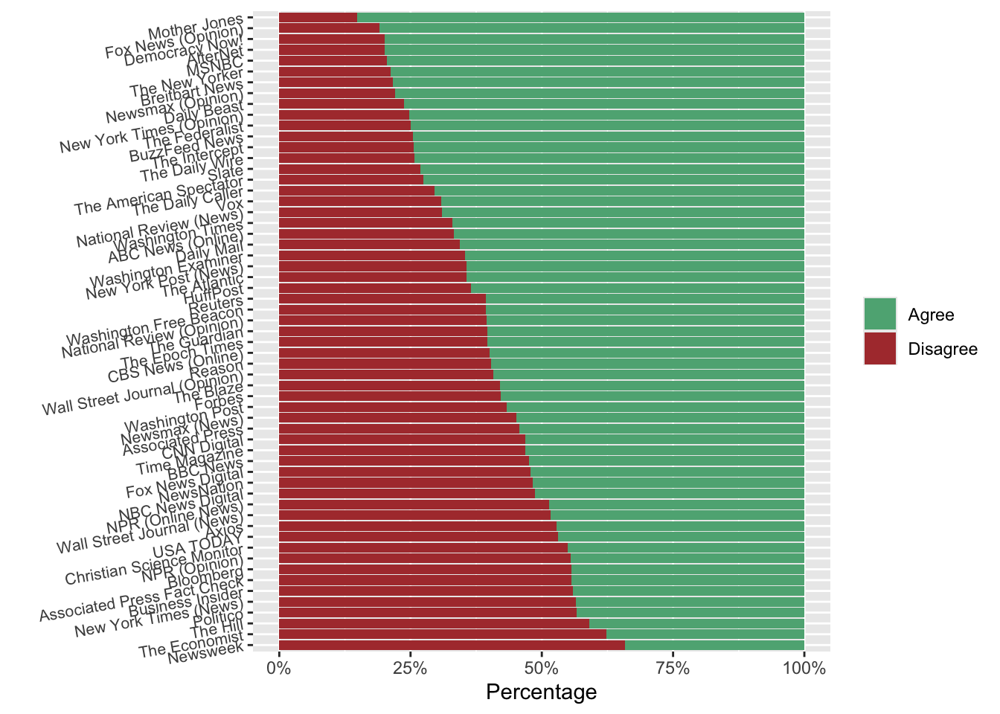
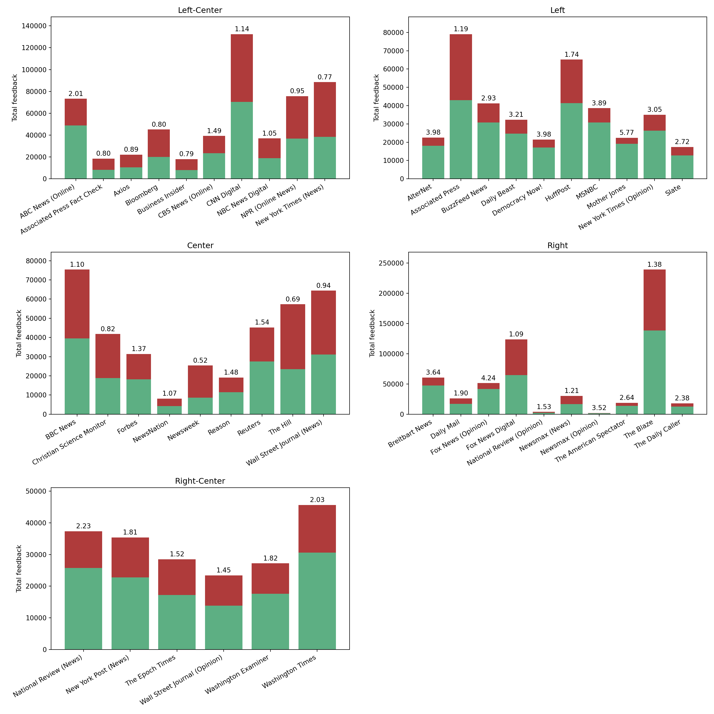

library(tidyverse)
# install.packages("rvest")
library(rvest)
# install.packages("xml2")
library(xml2)
library(httr)
# I saved the html in lab-3-data.html, and load it back in so that I don't re-request
# every time I render.
html <- read_html(x = "lab-3-data.html")Lab 3
Web Scraping
As we’ll talk about in lecture, it’s important to scrape websites consciously, with minimal negative impact. Every time you load a website, you’re technically making a request to that server. As an individual person browsing the Web, there’s only so many requests you will likely make in a given period of time, even if you visit a lot of websites or refresh pages a few times. But with a scraper that could potentially execute thousands of requests a second, you could end up costing the Web site owner a lot of money and even possibly bring down their site (this is called a Denial-of-Service attack, or DoS).
You also want to make sure that it is legal to scrape a specific Web site at all.
Two general rules that we will always follow are:
- Make only one request per page;
- Wait a little between each request.
Data to Scrape
For this week’s lab, we’ll work with this Web page: https://www.allsides.com/media-bias/ratings
AllSides is an interesting site that attempts to make the political leanings of different media sources more transparent. Their ratings page displays a number of different news sources, along with their overall rating of the source, on a scale from “Left” to “Right,” and the proportion of members of the public who agree with that rating.

Before scraping any web site, you’ll want to investigate their Terms of Service (sometimes called Terms of Use) and their robots.txt file. The Terms of Use page for this site makes no discernible mention of web scraping (see here: https://www.allsides.com/terms-of-use). To double-check, you can search the page for terms related to web scraping or crawling. Nothing pops up, so we’re good there. Next, we check robots.txt. Here’s theirs: https://www.allsides.com/robots.txt The page that we want to scrape isn’t listed under any of their “Disallow” sections. We should note that Crawl-delay: 10, which means they request that anyone using a web crawler should wait 10 seconds between requests. Otherwise, we are good to go!
Let’s do the actual scraping. Remember, be very careful to access the page (run read_html) only once. If you try to access it more than once, it may actually stop working and give you an error (often Error 403; look back at our API notes to find what that code stands for).
Run read_html once, then store the results. My code to do so is as follows:
Scraping in R: rvest
First we need to find where and how the data we want are structured inside the HTML for our Web page. Unfortunately, every Web page is likely to be at least slightly different. Some will use tables, some won’t; some will use JavaScript, some won’t; some will use frames, some won’t. The more complex the structure of the Web page, the harder it may ultimately be to scrape. This is why, if a company or organization has a publicly available API, it’s almost always easier and more efficient to access their data using their API.
Not every site has an API, however. Sometimes the information you want is just not directly downloadable – and copying and pasting text, which is a sort of manual “web scraping,” in a sense, is very slow and prone to errors. So we turn to web scraping.
Most browsers (Safari, Chrome, Firefox, etc.) are kind enough to provide a relatively quick way of finding the selector for an individual element using their developer tools. In Google Chrome, you can simply right-click on the element of interest, then click on Inspect. When you do, the developer tools pane will appear, highlighting the element you clicked on.
If I highlight the entire table, for example, and then Inspect, I see the following:

This tells us that all the news source data is neatly stored inside one big table. That makes our life much easier. Each row’s information is stored within the <tr></tr> tags within <tbody></tbody>. We can look at a single row like this:

So to extract the data for each source, we just need to select all the <tr> tags within <tbody>. In R, we can do this by:
table_rows <- html %>%
html_elements("tbody") %>%
html_elements("tr")Now we have a set of 50 HTML table rows (one per source) that each contain four cells:
News source name and link
Bias data
Agreement buttons
Community feedback data
Let’s break down how we could extract all this information. First of all, the news source name. If we highlight the first name and Inspect, we see that:

The outlet name – ABC News (Online) – is the text of an anchor tag (the <a href>), which is nested inside a <td> tag. We don’t just want to ask for all <td> tags, because that would return almost everything, not just the names. Instead, we can ask for all the HTML elements with .source-title, which pulls out all the <td> tags whose class contains source-title.
We then pass those elements to html_text2(), which drops the <td> and <a href> tags and simply retains the text of the source titles:
source_titles <- table_rows %>%
html_elements(".source-title") %>%
html_text2()We also might want to obtain the link for each news source’s page on AllSides. We can pull that out while we’re here; it’s also in the <td> tags with source-title.
source_links <- paste0("https://www.allsides.com",
(table_rows %>%
html_elements(".source-title") %>%
html_elements("a") %>%
html_attr("href")))Notice that this time we need to ask for the <a> elements, and then, rather than simply extracting the text, we want the attribute value that is assigned to href, which is the text to our links.
Each source’s link is actually just what is called a relative path; for example, rather than https://www.allsides.com/news-source/forbes, the link is simply /news-source/forbes. That works if you’re on the AllSides page already, but if we just wanted to get to that page directly from anywhere, it wouldn’t work. That’s why we use paste0 to add the first part of the URL to each source’s link.
Now let’s look at the bias rating. Well, this seems tricky. The bias rating information is stored in an image! How can we extract that information in words?
Take a look at the HTML code for one of the bias rating images:

The image is linked inside this <td class> tag, and the image itself is wrapped inside another link tag, an <a href> tag! The best part is that this link goes to /media-bias/left-center. You can click on some of the bias ratings to verify. Each rating points to a link about the definition of that category; in other words, sources rated left-center link to that page, sources rated center link to that page, and so on. This means that we can extract the bias rating information itself simply by accessing that link tag.
source_bias <- table_rows %>%
html_elements(".views-field-field-bias-image") %>%
html_elements("a") %>%
html_attr("href") %>%
str_remove("/media-bias/")You can run each line there one at a time to verify what we’re doing. We essentially pull out the relative path from each link, then drop the first part of the path (the "/media-bias/") to retain only the last part. Each source now has a value of left-center, left, center, right-center, etc., accordingly.
The last thing we might want is the community feedback data – how many people agreed vs. disagreed with the rating, and the judgment (strongly agrees, absolutely agrees, etc.). This information is certainly more convoluted. The number of people who agree and disagree is, at least, relatively easy to grab, because their tags have classes unique to that cell, "agree" or "disagree".

We can pluck them out, read the text, and convert them to numbers as follows:
source_agree <- table_rows %>%
html_element(".agree") %>%
html_text2() %>%
as.numeric()
source_disagree <- table_rows %>%
html_element(".disagree") %>%
html_text2() %>%
as.numeric()We also might want the ratio of agree to disagree:
source_agree_ratio <- source_agree/source_disagreeNow we just have the last part, the text saying whether the community agrees, strongly agrees, etc.
table_rows %>%
html_elements(".commtext") %>% html_text2() %>% str_remove("^Community\\s+") [1] "strongly agrees." "absolutely agrees." "somewhat agrees."
[4] "somewhat disagrees." "somewhat disagrees." "somewhat agrees."
[7] "somewhat disagrees." "absolutely agrees." "somewhat disagrees."
[10] "strongly agrees." "somewhat agrees." "somewhat disagrees."
[13] "somewhat agrees." "absolutely agrees." "agrees."
[16] "absolutely agrees." "somewhat agrees." "absolutely agrees."
[19] "somewhat agrees." "agrees." "absolutely agrees."
[22] "absolutely agrees." "strongly agrees." "agrees."
[25] "somewhat agrees." "agrees." "somewhat disagrees."
[28] "absolutely agrees." "somewhat agrees." "absolutely agrees."
[31] "somewhat agrees." "disagrees." "somewhat disagrees."
[34] "somewhat disagrees." "somewhat disagrees." "somewhat agrees."
[37] "agrees." "strongly agrees." "strongly agrees."
[40] "agrees." "somewhat agrees." "strongly agrees."
[43] "strongly agrees." "disagrees." "agrees."
[46] "strongly agrees." "agrees." "somewhat disagrees."
[49] "strongly agrees." "absolutely agrees." "somewhat agrees."
[52] "somewhat disagrees." "strongly agrees." "somewhat disagrees."
[55] "somewhat agrees." "agrees." "agrees."
[58] "somewhat agrees." "strongly agrees." Now let’s lay all that code out and make a data frame (tibble) of the first 50 rows – that whole page:
source_titles <- table_rows %>%
html_elements(".source-title") %>%
html_text2()
source_links <- paste0("https://www.allsides.com",
(table_rows %>%
html_elements(".source-title") %>%
html_elements("a") %>%
html_attr("href")))
source_bias <- table_rows %>%
html_elements(".views-field-field-bias-image") %>%
html_elements("a") %>%
html_attr("href") %>%
str_remove("/media-bias/")
source_agree <- table_rows %>%
html_element(".agree") %>%
html_text2() %>%
as.numeric()
source_disagree <- table_rows %>%
html_element(".disagree") %>%
html_text2() %>%
as.numeric()
source_agree_ratio <- source_agree/source_disagree
source_agreement <- table_rows %>%
html_elements(".commtext") %>%
html_text2() %>%
str_remove("^Community\\s+")
data = tibble(source_titles, source_links, source_bias,
source_agree, source_disagree, source_agree_ratio,
source_agreement)
data# A tibble: 59 × 7
source_titles source_links source_bias source_agree source_disagree
<chr> <chr> <chr> <dbl> <dbl>
1 ABC News (Online) https://www… https://ww… 48959 24350
2 AlterNet https://www… https://ww… 18006 4527
3 Associated Press https://www… https://ww… 42955 36080
4 Associated Press Fact … https://www… https://ww… 8196 10297
5 Axios https://www… https://ww… 10462 11708
6 BBC News https://www… https://ww… 39530 35857
7 Bloomberg https://www… https://ww… 20014 25141
8 Breitbart News https://www… https://ww… 47476 13050
9 Business Insider https://www… https://ww… 7911 10050
10 BuzzFeed News https://www… https://ww… 30753 10488
# ℹ 49 more rows
# ℹ 2 more variables: source_agree_ratio <dbl>, source_agreement <chr>How could you scale this up? Well, imagine that there were multiple pages of sources and ratings. If each page had the same structure, and the URLs followed some kind of consistent pattern – for example, if the second page had the URL https://www.allsides.com/media-bias/ratings?page=2, and so on – you could simply write a loop, like so, to extract information from multiple pages:
urls <- c("https://www.allsides.com/media-bias/ratings",
"https://www.allsides.com/media-bias/ratings?page=2",
"https://www.allsides.com/media-bias/ratings?page=3")
for(i in 1:length(urls)){
html <- read_html(urls[i])
table_rows <- html %>%
html_elements("tbody") %>%
html_elements("tr")
extract_data(table_rows) # Notice this is not a real function;
# instead you would run whatever code you'd created to extract the data.
Sys.sleep(10) # to wait 10 seconds between requests
}Note that I set eval=FALSE to the above code chunk; AllSides doesn’t follow that URL structure, so this is a hypothetical example to demonstrate how the process would work for a website that was organized this way.
Now let’s take a look at the data that we scraped!
Exercises
- Find all the sources on which the community absolutely agrees. Display the titles of these sources and their bias. How many “center” sources does the community absolutely agree on?
- Which sources do the community disagree on? (Consider “somewhat disagrees” to “absolutely disagrees”.)
- Make a bar chart of community agreeance. Does the community tend to agree or disagree with AllSides’ ratings?
- Make a table of bias. What do you notice?
- Study the following plot. What patterns do you notice? Pay attention to each line of code and see if you can figure out what each part does.
data %>%
pivot_longer(cols = c(source_agree, source_disagree), names_to = "feedback", values_to = "count") %>%
group_by(source_titles) %>%
mutate(proportion = count / sum(count)) %>%
mutate(agree_proportion = sum(count[feedback == "source_agree"]) / sum(count)) %>%
ungroup() %>%
mutate(source_titles = reorder(source_titles, agree_proportion)) %>%
ggplot(aes(y = source_titles)) +
geom_bar(aes(x = proportion, fill = factor(feedback)), position = "fill",
stat = "identity") +
guides(fill = guide_legend(title = NULL)) +
scale_fill_manual(values = c("#5DAF83", "#AF3B3B"), labels = c("Agree", "Disagree")) +
labs(x = "Percentage", y = "") +
theme(axis.text.y = element_text(size = 8, angle = 10)) +
scale_x_continuous(labels = scales::percent, limits = c(0, 1))
Scraping in Python: Beautiful Soup
If you are wanting to use Python to build your web scraper, there’s no library I would recommend more than Beautiful Soup. Read more about it here: https://www.crummy.com/software/BeautifulSoup/ You can also find their “Hall of Fame,” a selection of projects made with the software.
BeautifulSoup was created in 2004. Its name is meant to be a reference to both the term “tag soup,” which refers to poorly-organized HTML code, and the poem “Beautiful Soup,” from Alice in Wonderland. The implication is that this Python library enables you to take messy, disorganized data (tag soup) and recognize that it is actually a beautiful soup, because you have the ability to parse it efficiently and obtain organized information.
We’re going to switch to some Python code chunks now. This will require loading the necessary Python libraries. If you haven’t already installed BeautifulSoup, you’ll need to uncomment and run the code in the following R code chunk first:
library(reticulate)
use_condaenv("pstat134-234", required = TRUE) #specify here your env
# py_install("beautifulsoup4")import requests
from bs4 import BeautifulSoupNote that I will set the following code chunk to not evaluate – why? Because I have already requested the content of the page we’re scraping above, and stored it to an .html file. Remember that we only want to request a page once, as a rule. Scrape politely!
url = 'https://www.allsides.com/media-bias/media-bias-ratings'
r = requests.get(url)
soup = BeautifulSoup(r.content, 'html.parser')Instead, we’ll load the .html file that was saved earlier:
htmlfile = open("lab-3-data.html", "r")
# Reading the file
index = htmlfile.read()
# Creating a BeautifulSoup object and specifying the parser
soup = BeautifulSoup(index, 'html.parser')We’ll follow the same steps as we did with the data in R using rvest. First, we’ll pull out the rows in the table containing the information we want:
rows = soup.select('tbody tr')tbody tr tells the selector to extract all <tr> tags that are children of (inside of) the <tbody> tag.
Then we’ll pull out the news source names. In Python, it might be easier to do this for the first row initially, and then progress to all the rows once we have the code figured out. For the first row, we can pull out the source name the same way we did in R; we can get the first row, select .source-title, and extract the text.
row = rows[0]
name = row.select_one('.source-title').text.strip()
print(name)ABC News (Online)For the news source link, it will be very similar; we add the a, select the href attribute, and attach the first part of the URL, “https://www.allsides.com”:
allsides_page = row.select_one('.source-title a')['href']
allsides_page = 'https://www.allsides.com' + allsides_page
print(allsides_page)https://www.allsides.comhttps://www.allsides.com/news-source/abc-news-media-biasFor the bias information, we’ll again pull it out from the link URL:
bias = row.select_one('.views-field-field-bias-image a')['href']
bias = bias.split('/')[-1]
print(bias)left-centerWe select the anchor tag by using the class name and tag together: .views-field-field-bias-image is the class of the <td> and a is for the anchor nested inside. We extract href like before, but now we only want the last part of the URL for the name of the bias, so we split on the slashes (/) and retain the last element of that split (here, left-center).
Then the community feedback information:
agree = row.select_one('.agree').text
agree = int(agree)
disagree = row.select_one('.disagree').text
disagree = int(disagree)
agree_ratio = agree / disagree
print(f"Agree: {agree}, Disagree: {disagree}, Ratio {agree_ratio:.2f}")Agree: 48959, Disagree: 24350, Ratio 2.01Using .text returns a string, so we need to convert to integers – just like we used as.numeric() in R. On a side note – if you’ve never seen this way of formatting print statements in Python, the f at the front allows you to insert variables directly into the string using curly braces. The :.2f is a way to format a float to show only two decimal places.
We can extract the community feedback:
print(row.select_one('.commtext').text.strip().replace("Community ", ""))strongly agrees.Now that we have all the general code for a specific row, we can create a loop to extract data from every row on the page:
data= []
for row in rows:
d = dict()
d['name'] = row.select_one('.source-title').text.strip()
d['allsides_page'] = 'https://www.allsides.com' + row.select_one('.source-title a')['href']
d['bias'] = row.select_one('.views-field-field-bias-image a')['href'].split('/')[-1]
d['agree'] = int(row.select_one('.agree').text)
d['disagree'] = int(row.select_one('.disagree').text)
d['agree_ratio'] = d['agree'] / d['disagree']
d['agreeance_text']= row.select_one('.commtext').text.strip().replace("Community ", "")
data.append(d)Our data list now contains a big JSON dictionary containing the key-value pairs of information for every row that we scraped:
print(data[0]){'name': 'ABC News (Online)', 'allsides_page': 'https://www.allsides.comhttps://www.allsides.com/news-source/abc-news-media-bias', 'bias': 'left-center', 'agree': 48959, 'disagree': 24350, 'agree_ratio': 2.0106365503080084, 'agreeance_text': 'strongly agrees.'}Again, this is only the first page. In a hypothetical example where there were multiple pages with organized URLs, you could run the following chunk of code to scrape three pages. Note that we import the sleep function. This is to ensure that we wait 10 seconds between requests to the server, as they specify in their robots.txt.
pages = [
'https://www.allsides.com/media-bias/media-bias-ratings',
'https://www.allsides.com/media-bias/media-bias-ratings?page=1',
'https://www.allsides.com/media-bias/media-bias-ratings?page=2'
]
from time import sleep
data= []
for page in pages:
r = requests.get(page)
soup = BeautifulSoup(r.content, 'html.parser')
rows = soup.select('tbody tr')
for row in rows:
d = dict()
d['name'] = row.select_one('.source-title').text.strip()
d['allsides_page'] = 'https://www.allsides.com' + row.select_one('.source-title a')['href']
d['bias'] = row.select_one('.views-field-field-bias-image a')['href'].split('/')[-1]
d['agree'] = int(row.select_one('.agree').text)
d['disagree'] = int(row.select_one('.disagree').text)
d['agree_ratio'] = d['agree'] / d['disagree']
d['agreeance_text'] = row.select_one('.commtext').text.strip().replace("Community ", "")
data.append(d)
sleep(10)Now we can finally take our data, in JSON format, and use pandas to turn it into a data frame for easier use (just like we did in the API section):
import pandas as pd
df = pd.DataFrame(data)
df.set_index('name', inplace=True)
df.head() allsides_page ... agreeance_text
name ...
ABC News (Online) https://www.allsides.comhttps://www.allsides.c... ... strongly agrees.
AlterNet https://www.allsides.comhttps://www.allsides.c... ... absolutely agrees.
Associated Press https://www.allsides.comhttps://www.allsides.c... ... somewhat agrees.
Associated Press Fact Check https://www.allsides.comhttps://www.allsides.c... ... somewhat disagrees.
Axios https://www.allsides.comhttps://www.allsides.c... ... somewhat disagrees.
[5 rows x 6 columns]Exercises
- Study the following plot. What patterns do you notice? Pay attention to each line of code and see if you can figure out what each part does.
import matplotlib.pyplot as plt
df['total_votes'] = df['agree'] + df['disagree']
df3 = df.copy()
fig = plt.figure(figsize=(15,15))
biases = df3['bias'].unique()
for i, bias in enumerate(biases):
temp_df = df3[df3['bias'] == bias].iloc[:10]
temp_df.sort_index(inplace=True)
max_votes = temp_df['total_votes'].max()
ax = fig.add_subplot(3, 2, i + 1)
ax.bar(temp_df.index, temp_df['agree'], color='#5DAF83')
ax.bar(temp_df.index, temp_df['disagree'], bottom=temp_df['agree'], color='#AF3B3B')
for x, y, ratio in zip(ax.get_xticks(), temp_df['total_votes'], temp_df['agree_ratio']):
ax.text(x, y + (0.02 * max_votes), f"{ratio:.2f}", ha='center')
ax.set_ylabel('Total feedback')
ax.set_title(bias.title())
ax.set_ylim(0, max_votes + (0.12 * max_votes))
plt.setp(ax.get_xticklabels(), rotation=30, ha='right')<BarContainer object of 10 artists>
<BarContainer object of 10 artists>
Text(0, 75956.86, '2.01')
Text(1, 21140.86, '0.80')
Text(2, 24817.86, '0.89')
Text(3, 47802.86, '0.80')
Text(4, 20608.86, '0.79')
Text(5, 41875.86, '1.49')
Text(6, 135040.86, '1.14')
Text(7, 39623.86, '1.05')
Text(8, 78261.86, '0.95')
Text(9, 91137.86, '0.77')
Text(0, 0.5, 'Total feedback')
Text(0.5, 1.0, 'Left-Center')
(0.0, 148280.16)
[None, None, None, None, None, None, None, None, None, None, None, None, None, None, None, None, None, None, None, None]
<BarContainer object of 10 artists>
<BarContainer object of 10 artists>
Text(0, 24113.7, '3.98')
Text(1, 80615.7, '1.19')
Text(2, 42821.7, '2.93')
Text(3, 33929.7, '3.21')
Text(4, 23053.7, '3.98')
Text(5, 66751.7, '1.74')
Text(6, 40199.7, '3.89')
Text(7, 23981.7, '5.77')
Text(8, 36559.7, '3.05')
Text(9, 18992.7, '2.72')
Text(0, 0.5, 'Total feedback')
Text(0.5, 1.0, 'Left')
(0.0, 88519.2)
[None, None, None, None, None, None, None, None, None, None, None, None, None, None, None, None, None, None, None, None]
<BarContainer object of 9 artists>
<BarContainer object of 9 artists>
Text(0, 76894.74, '1.10')
Text(1, 43271.74, '0.82')
Text(2, 32900.74, '1.37')
Text(3, 9659.74, '1.07')
Text(4, 26865.74, '0.52')
Text(5, 20653.74, '1.48')
Text(6, 46751.74, '1.54')
Text(7, 58783.74, '0.69')
Text(8, 65883.74, '0.94')
Text(0, 0.5, 'Total feedback')
Text(0.5, 1.0, 'Center')
(0.0, 84433.44)
[None, None, None, None, None, None, None, None, None, None, None, None, None, None, None, None, None, None]
<BarContainer object of 10 artists>
<BarContainer object of 10 artists>
Text(0, 65310.44, '3.64')
Text(1, 30978.440000000002, '1.90')
Text(2, 56189.44, '4.24')
Text(3, 128495.44, '1.09')
Text(4, 8580.44, '1.53')
Text(5, 35038.44, '1.21')
Text(6, 6859.4400000000005, '3.52')
Text(7, 23612.440000000002, '2.64')
Text(8, 244006.44, '1.38')
Text(9, 22771.440000000002, '2.38')
Text(0, 0.5, 'Total feedback')
Text(0.5, 1.0, 'Right')
(0.0, 267928.64)
[None, None, None, None, None, None, None, None, None, None, None, None, None, None, None, None, None, None, None, None]
<BarContainer object of 6 artists>
<BarContainer object of 6 artists>
Text(0, 38240.86, '2.23')
Text(1, 36274.86, '1.81')
Text(2, 29396.86, '1.52')
Text(3, 24313.86, '1.45')
Text(4, 28116.86, '1.82')
Text(5, 46555.86, '2.03')
Text(0, 0.5, 'Total feedback')
Text(0.5, 1.0, 'Right-Center')
(0.0, 51120.16)
[None, None, None, None, None, None, None, None, None, None, None, None]
plt.tight_layout(w_pad=3.0, h_pad=1.0)
plt.show()
References
This lab has referenced the following: